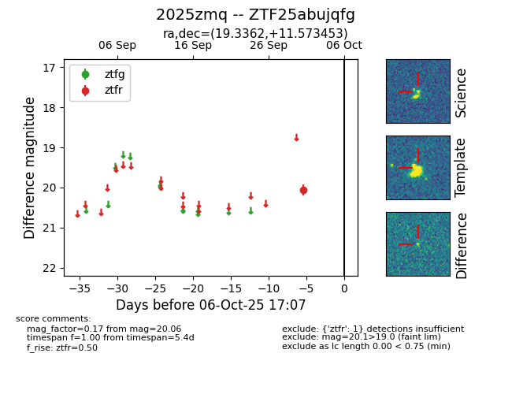

FINK: ZTF25abujqfg
Lasair: ZTF25abujqfg
ALeRCE: ZTF25abujqfg
TNS: 2025zmq
YSE: 2025zmq
ZTF25abujqfg (ztf,fink)
2025zmq (tns,yse)
equatorial (ra, dec) = (19.3362,+11.57345)
galactic (l, b) = (132.9995,-50.79118)

last ztfr=20.06
1 ztfr detections